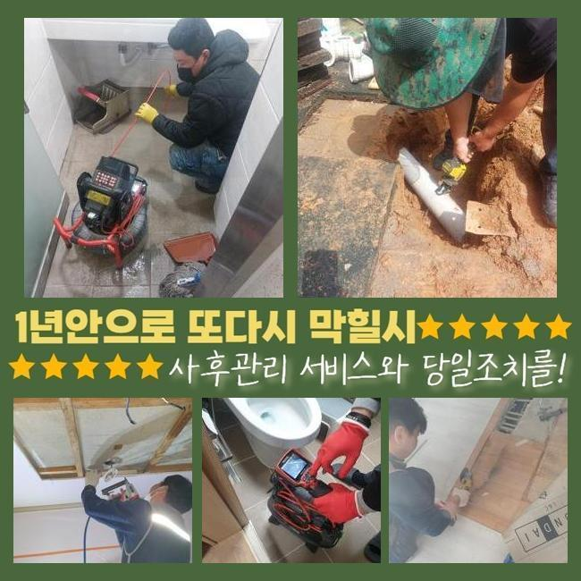
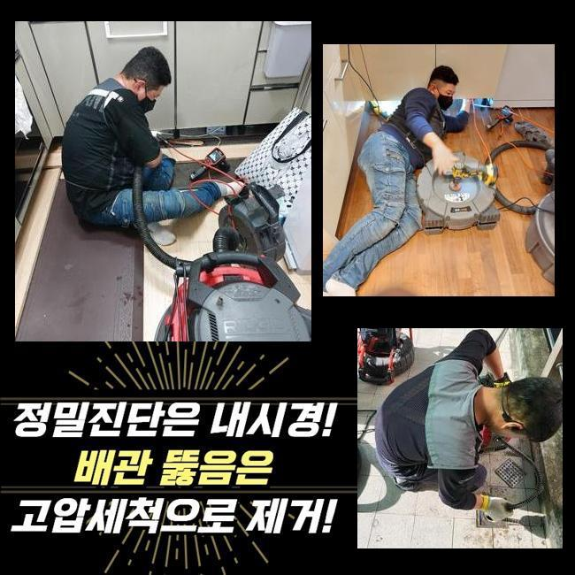
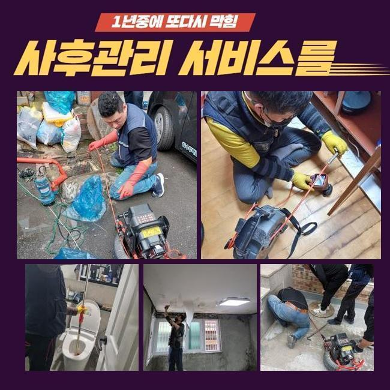
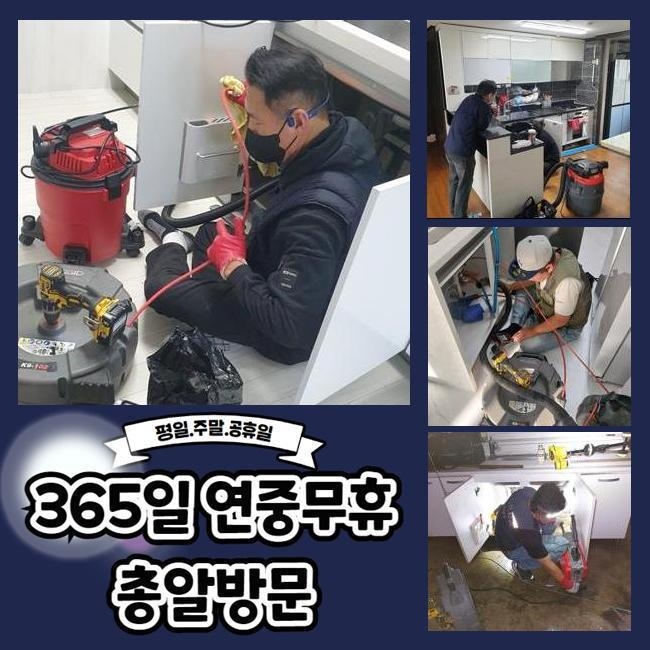
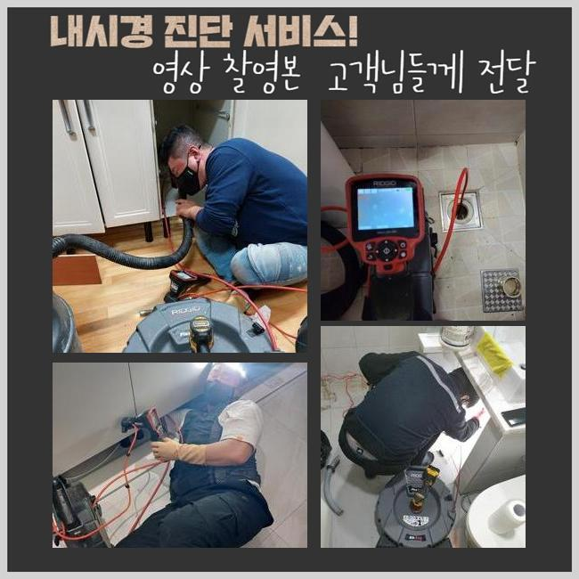
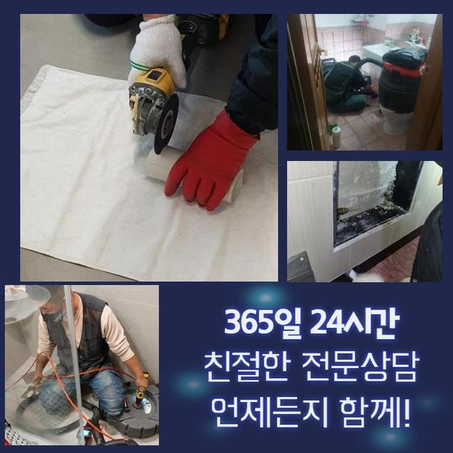

🏠 이천 변기막힘 안성 오수맨홀청소 배관공사
안성 변기막힘 전문 시공 후기

📋 작업 개요
- 위치: 안성
- 서비스 유형: 변기막힘, 하수구막힘, 배관막힘, 맨홀막힘, 집수정막힘, 뚫는업체, 배관청소, 고압세척, 설비공사, 배관보수
- 작업 일시: 2024. 10. 15. 14:49
- 업체명: 하수구수사대 (010-5615-2118)
🔍 문제 상황
이천 변기막힘 안성 오수맨홀청소 배관공사
집안에서 사용한 물은 각각 나가는 식으로 처리되지 않고 다양한 집에서 하나의 배관을 함께 쓰며 이 경로로 외부 시설으로 나가는 형태입니다
이와 같은 중심관로는 집수정이라고 칭해지는 거대한 시설물으로 이어지게 되는 것입니다
이런 외부 유출구 부위가 고장나게 되면 아래층 세대에서 부터 하수구 막힘 을 초래하게 됩니다
오늘 방문한 곳도 외부 시설물에 손상을 입어서 모든 하수경로가 올스탑되어 관로에 물이 고이기만 하다가 물이 역행해서 올라오는 일까지 벌어진 모습이었네요
세대 안에 깔린 하수구가 보통 봉쇄되었을 것이라며 여기기 쉬우므로 대부분 내부 배관상의 오류로 접수를 해주실 때가 많아요
시설물에 대한 점검을 실시해보니 해당 집수정이 멀쩡한 모습이 아니고 실태는 암담했어요
건물의 많은 호실에서 일괄적으로 하수구의 이상 증세를 체감하시는 중이어서 문제 발단을 얼른 소강시켜드리는 게 급선무였어요
외부시설에서 출발하여 단서를 찾아가면서 내측에 깔린 배수로에 이르기까지 수습해보자고 작업노선을 세웠죠
이물질이 많아서 뿌연 상태라 고인 물 속에서 돌아다니는 슬러지부터 필터링을 해서 삭제되도록 청소했습니다
삭제가 다 되고나면 내시경카메라로 현황이 어떤지 살펴봐요
해당 시설물을 점검했더니 직경이 넓은 중심 배관 역시도 오물이 쌓여서 배수에 제재가 걸린 상황이었습니다

🔎 원인 분석
💡 전문가 진단: 정밀 진단 장비를 사용하여 슬러지의 고착 여부를 판명하고 타격/세척 작업을 실시했습니다.
다량이 계속 누적되다보니 물이 나갈 경로를 메워버려서 고장나고 쉽사리 뚫리지 않는거죠
고인 잔수를 삭제하는 것이 우선이니 배출구를 만들어서 정체된 잔수가 폐기되도록 첫 단계를 시행했습니다
압도적인 사이즈의 이물질이 관로를 봉쇄하고 있었기에 하수구 스프링 장비의 동원이 적합할 것이라 예측됐습니다
강력한 힘을 지닌 스프링은 대상 오염원에 고정되어 제거될 수 있게 도와줘요
탁탁 털어주는 식의 진동으로 강하게 고정된 오염물 역시 없어지면서 물이 바깥으로 흘러나가게 돼요
스프링작업을 완수하면 비로소 안에 고인 오염원을 목격할 수 있게 돼요
세제 잔여물이나 찌꺼기같은 존재들이 고착화되어 있다는 사태임을 깨달을 수 있었네요!
밑으로 흘러버리지 않게 조심스레 행동해오셨더라도 건물 전체에서 사용하는 관로니까 최선을 다했더라도 하수막힘은 필연적으로 마주치게 됩니다
내부를 혼탁하게 막던 두터운 오염물 덩어리를 삭제해주고 다시금 변화 양상을 살펴봐요
카메라로 발견한 내용을 말하자면 물이 나갔기 때문에 쾌적해지긴 했으나 여전히 막힌 게 전부 뚫린 것은 아닌지라 정상화가 됐다싶은 통수 상태가 이뤄진 것은 아니다 싶었어요
안에서 오래 고여온 큰 찌꺼기들이 직경을 꽉 메우다보니 하수가 나갈 길을 잃어서 역행이 나타나게 되는 것은 당연합니다
이제는 관측은 쉬워졌으므로 집수정에서 관로로 역으로 진입하여 어떤 오류가 발생됐나 봐줍니다
초기 작업환경을 만들고자 부피가 큰 노폐물은 덜어냈지만 임시적 조치일 뿐입니다

🔧 작업 과정
벽면에 접착된 오염원인까지도 모조리 수습하지 않는다면 다시 하수구가 막혀버릴 수 이썽서 더 세부적인 기법의 장비로 복합적인 클리닝을 해드립니다
이때 쓰는 샤프트는 긴 노즐에 체인 헤드가 달려있는 타입으로 이 헤드부위가 빠른 속도로 돌면서 어떤 이물질이라도 모조리 정리정돈하게 됩니다
노커가 뱅글뱅글 돌면서 효율적으로 내부에 고착화된 이물질 대상들을 없애나가는 원리다보니 완성도가 높고 쾌적한 하수구로 회복시킬 수 있어요
배관의 한 부분이라도 타격입으면 배로 어려운 사태가 초래되니 안정성도 중점을 두는 것이 기초로 깔려야 합니다
막힘이 막대한 수준은 아니라면 샤프트만 써서도 극복할 수 있기는 합니다
대형 기기 보다는 샤프트를 우선 들여보내고 막힌 점을 처리가 까다롭겠다 한다면 고압세척의 방식을 적용해서 조치를 취하고 있습니다
전과정에서 실시간으로 계속 상황을 주시하면서 기타 문제가 발생하지 않도록 하수구 경로를 확보해 나갔어요
샤프트로는 힘들었던 부근들을 지속적으로 점검하면서 말끔해지도록 청소했습니다
다른 구간에서도 더러운 침전물질이 노출되었고 이곳은 양이 방대해서 고압수로 세척하는 게 효율적이다 싶었습니다
기기 자체가 값이 꽤 나가고 정교한 기술이 필수적인 장비다보니 웬만하면 여러 조건을 비교해보고 이용을 들어가게 될 정도입니다
다량의 찌꺼기가 고인 사태라서 응축된 힘의 물로써 통쾌하게 청소를 해줘야만 겉보기에도 쾌적해지며 물이 잘 흘러나가게 됩니다
고압세척 기술은 이물질 청소와 오래 걸리지 않고도 완수를 할 수 있다는 엄청난 장점을 보유하고 있습니다
이번 작업지는 옥외에 있는 하수관이라는 특성상 훼손에 대한 우려를 그닥 떠안지는 않아도 됐기에 난이도가 어렵진 않았네요
하수구가 지닌 속성과 내구성을 반영하지 않고 임한다면 강력한 물살의 공격을 지탱하지 못해서 심할 경우 부서지는 측면이 나옵니다
봉쇄된 통로를 트이게 하는 장비들의 경우는 석회성 물질까지 처리해야할 의무가 있으니 강력한 세기로 적용하게 됩니다
고압수로 청결 작업을 완수하니 전과는 딴판으로 월등히 빠르게 공정이 진행되었습니다
계속 청결 관리를 해드리니 이물질들이 밖으로 바깥으로 배출되어지더라고요
이처럼 미처리된 분량들을 싹 정리하지 않으면 다시 말썽을 일으킬 수 있어 촬영기기를 계속 켜서 반복해 깨끗해졌는지 명확히 짚고 넘어가야 합니다
전 단계가 끝나고 나면 배관 밖으로 물이 세차게 나오는 것을 보니 좋아졌음을 파악할 수 있었어요
스케일링 장치와 고압세척 기기를 활용해 노폐물을 제거하고 배관 속을 청결하게 만들어 드리게 됐네요


✅ 작업 완료
물의 흐름이 끊기지 않고 정상적으로 하수기능을 사용하시게 될 것입니다
고백하건데 오랜시간 하수구를 클리닝 받지 못했다고 이야기를 해주셨는데요
만일 주기적으로 청소를 이어가시면 더이상의 잡음이 없이 하수구를 확보하실 수 있을거예요
시원스러운 모양새로 물이 방출된다는 분들의 사실을 인증하고서 전체적인 업무에 마침표를 찍게 됐습니다
일제히 배수로들이 모두 다 마비되는 케이스라면 전문가의 손길을 빌려서 얼른 보수를 받으셔야 합니다
이런 케이스는 고압세척이 필수이니 고압세척 기계를 소장했는지 보고 시공을 맡기시는 걸 권하고 싶네요




⚠️ 하수구 배관 막힘 예방 및 관리 가이드
- ✅ 머리카락, 비닐, 물티슈 등 물에 분해되지 않는 이물질은 하수구 유입을 절대 금지해 주세요.
- ✅ 하수구 거름망을 씌우고 모여진 이물질은 주기적으로 쓰레기통에 바로 비워주셔야 합니다.
- ✅ 배관 노후가 심할 경우 이물질이 더 쉽게 걸리므로 주기적인 배관 세척(고압세척 등)을 권장합니다.
- ✅ 작업 후 1년 이내 재발 시 하수구수사대에서 무상 A/S 보증 서비스를 제공합니다.
💡 핵심 정리
- 확실한 장비 작업(내시경 점검 및 샤프트 스케일링)으로 원인을 뿌리 뽑습니다.
- 작업 후 1년 이내에 동일한 부위 재발 시 100% 무상 A/S 서비스를 보장합니다.
- 서울 · 경기 · 인천 전 지역에 24시간 언제든 긴급 출동할 수 있도록 항시 대기 중입니다.
❓ 자주 묻는 질문 (FAQ)
🚨 안성 변기막힘 문제로 고민이신가요?
정확한 원인 진단과 확실한 시공으로 재발 없는 해결을 약속드립니다.
24시간 긴급 출동 | 서울 · 경기 · 인천 전지역 | 1년 내 재발 시 무상 A/S